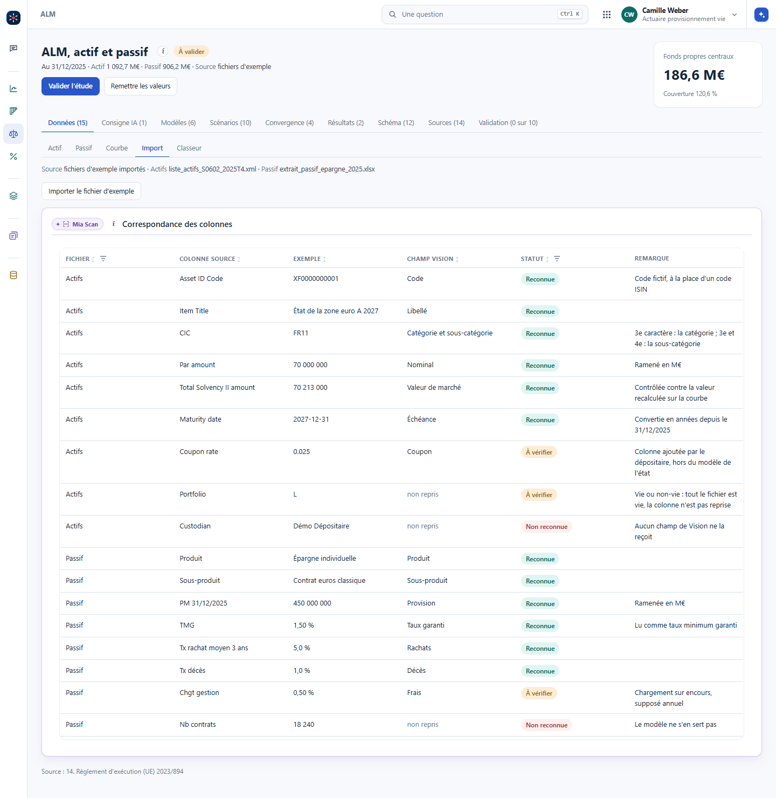
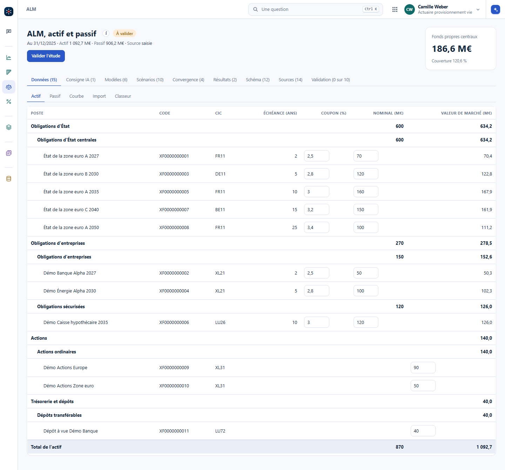
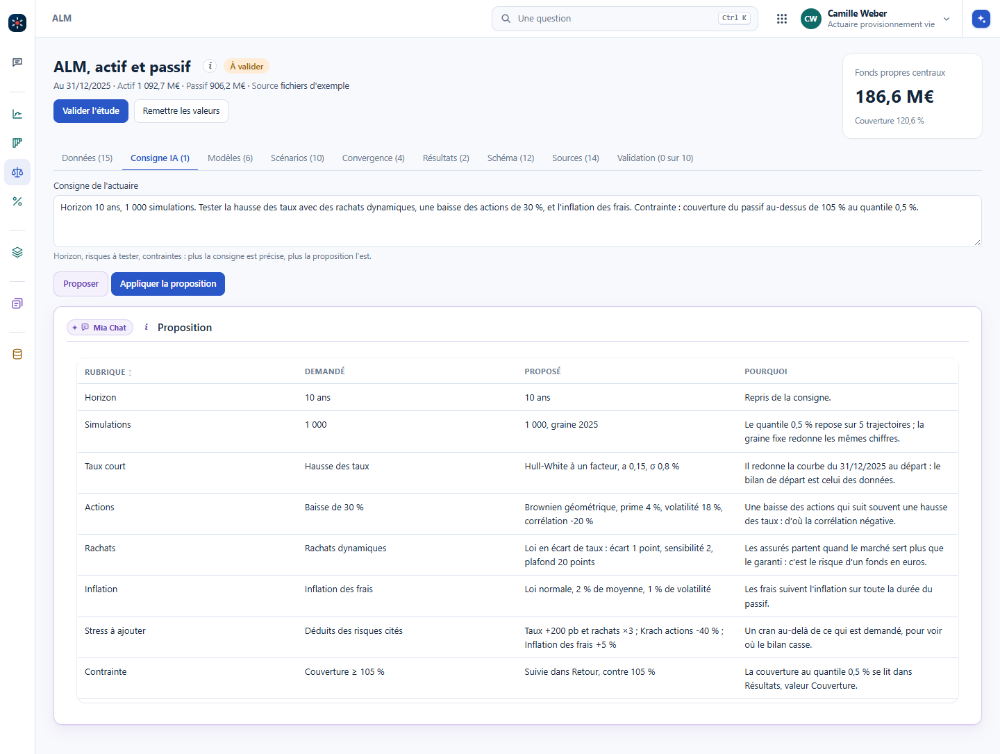
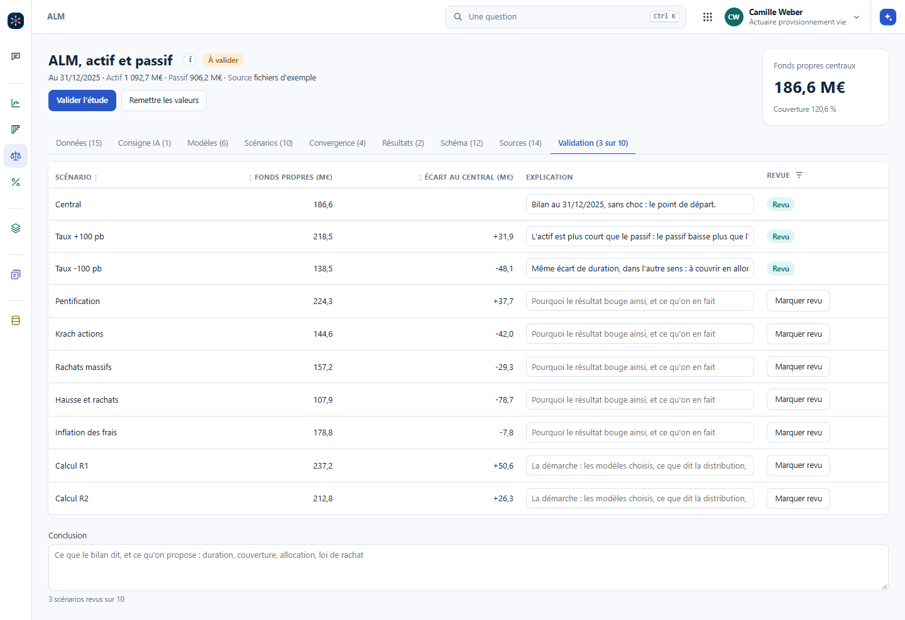
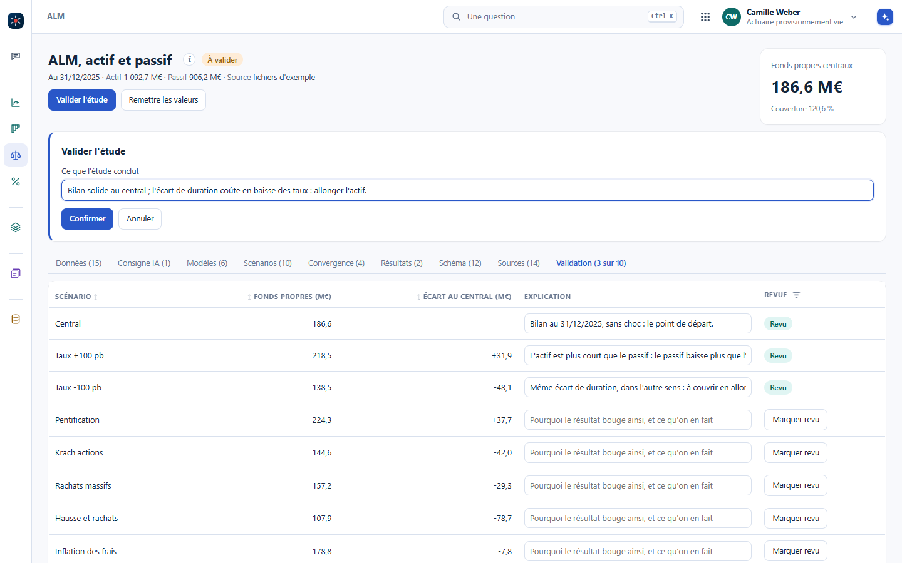

Les cas d'usage n'étaient pas prêts à l'avance : on les a construits en direct, avec l'IA, dans Vision. L'IA prépare des modèles, propose des scénarios et montre des résultats. L'actuaire décrit ce qu'il veut, explique la démarche et les résultats, puis valide d'un bouton. C'est la répartition des rôles qu'on garde ensuite dans le vrai travail.
L'ALM, le taux servi, la tarification de la RC professionnelle et celle du transport de marchandises sont des rubriques du groupe Actuariat de Vision. Chacune a ses onglets de travail, puis des onglets communs à toutes : Schéma, Sources et Validation. L'ALM d'un portefeuille d'épargne en euros est la plus complète ; les autres suivent le même parcours sur d'autres domaines, au chapitre D'autres domaines, le même parcours.
Dans Vision : #/alm, #/taux-servi, #/rc-professionnelle et #/transport, au poste d'actuaire provisionnement vie ou d'actuaire tarification IARD. Les données sont fictives. Vision n'est pas encore en ligne : le formateur fait la démonstration depuis son poste.
Structurer le parcours de l'actuaire, c'est ce qui montre où l'IA aide concrètement. Chaque étape est un onglet de l'ALM ; un clic sur une étape ouvre sa section.
L'IA a besoin d'input. Plus l'actuaire décrit ce qu'il veut, sur le portefeuille comme sur les scénarios, plus sa proposition est précise : c'est une forme de prompt engineering, et pour un actuaire elle consiste surtout à écrire ce qu'il sait déjà.
Tout part d'un portefeuille de base, fictif ici, à une date : le 31/12/2025. L'actuaire le maîtrise et le modifie : un nominal, un coupon ou une provision se changent dans la case, et toute la page se recalcule. En pratique, ce portefeuille arrive souvent dans un fichier Excel, ou dans les états de Solvabilité II : la liste des actifs S.06.02, remise en XML au format XBRL. L'IA aide à l'importer et à le ranger proprement dans une base. Mia Scan propose la correspondance des colonnes, reconnue, à vérifier ou non reconnue, avec une remarque ; l'actif se range ensuite par catégorie et sous-catégorie du code CIC, avec les sous-totaux de chaque niveau.


Dans Vision : #/alm?ong=donnees&part=import, puis « Importer le fichier d'exemple ». Les fichiers sont fictifs et la correspondance est écrite d'avance pour la formation. Un classeur mal rangé passe d'abord par le diagnostic du chapitre Un classeur bien rangé.
Dans l'onglet Consigne IA, l'actuaire écrit ce qu'il veut : l'horizon, le nombre de simulations, les risques à tester, la contrainte à respecter. « Proposer » rend la proposition de Mia Chat, avec à côté ce qui a été demandé et pourquoi chaque choix est fait. Rien ne change avant « Appliquer la proposition », qui crée les versions de modèles qui manquent, ajoute les stress proposés et un calcul.
Fais une ALM du portefeuille.
L'horizon et le nombre de simulations sont pris par défaut, sans rachats dynamiques, sans inflation, sans stress. Et sans contrainte, rien ne dit quand le résultat est mauvais.
Horizon 10 ans, 1 000 simulations. Tester la hausse des taux avec des rachats dynamiques, une baisse des actions de 30 %, et l'inflation des frais. Contrainte : couverture du passif au-dessus de 105 % au quantile 0,5 %.
Chaque rubrique est reprise, des stress sont ajoutés un cran au-delà de la demande, et la contrainte est suivie dans les résultats.

Dans Vision : #/alm?ong=consigne. La proposition est écrite d'avance : des règles fixes lisent la consigne, aucun modèle de langue n'est appelé, et la page le dit. Le geste, lui, est celui qu'on aura avec un vrai assistant.
Effacez la consigne, écrivez seulement « Fais une ALM du portefeuille », puis « Proposer ». Qu'est-ce qui manque dans la proposition, et qu'est-ce qui le montre ?
L'horizon de 10 ans et les 1 000 simulations sont pris par défaut. Le taux court est ajouté quand même, parce que le passif est garanti. Mais il n'y a ni rachats dynamiques, ni inflation des frais, ni stress, ni contrainte, et la colonne « Demandé » affiche « Non précisé » sur chacune de ces lignes. La dernière ligne le résume : sans contrainte, rien ne dit quand le résultat est mauvais.
L'onglet Validation est le même dans toutes ces rubriques. Une ligne par stress et par calcul, ses fonds propres et leur écart au central, l'explication de l'actuaire et « Marquer revu » ; puis la conclusion. Le geste « Valider l'étude », en tête de page, demande ce que l'étude conclut, et garde qui a validé, quand, et l'empreinte des données : si une donnée change ensuite, la page affiche « Modifiée depuis la validation ».


Dans Vision : #/alm?ong=validation.
Les fonds propres centraux valent 186,6 M€. Avec des taux à +100 pb, ils montent de 31,9 M€. Est-ce une bonne nouvelle, et qu'écrire dans l'explication ?
Ça dit surtout que l'actif est plus court que le passif : l'écart de duration est de -5,7 ans, donc le passif perd plus de valeur que l'actif quand les taux montent. Le même écart coûte 48,1 M€ quand les taux baissent de 100 pb. Et si la hausse des taux fait partir les assurés, le stress « Hausse et rachats » coûte 78,7 M€. L'explication écrit la cause, la duration, et ce qu'on en fait.